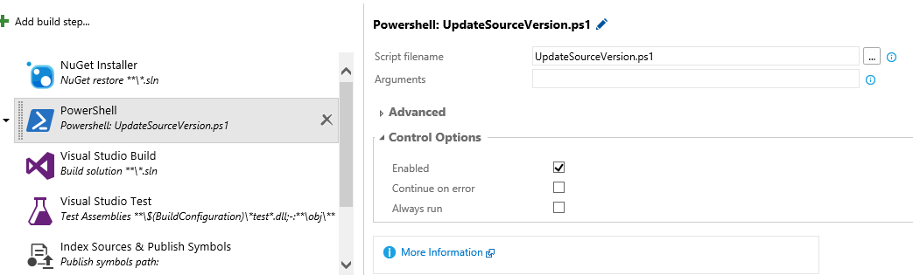

Krátky návod ako nastaviť automatickú úpravu čísla verzie assembly pomocou TFS-ka 2015 pre automatické buildy. Skript upravuje posledné dve čisla, kde Build Number je počet dní od zadaného dátumu a Revision sekunda buildu vrámci dňa, ide to samozrejme upraviť.
Do sourse controlu treba pridať do koreňového priečinku PowerShell script nazvaný UpdateSourceVersion.ps1 :
param([string] $BaseDir="")
if([string]::IsNullOrEmpty($BaseDir))
{
$BaseDir = split-path -parent $MyInvocation.MyCommand.Definition
}
$re = [regex] 'Assembly[a-zA-Z]+\("\d\.\d\.\*"\)'
[int]$buildNumberDay = ((Get-Date) - (Get-Date '2013-06-30')).Days
[int]$buildNumberSec = ((Get-Date) - [DateTime]::Now.Date).TotalSeconds
[string] $replacment = "{0}.{1}" -f $buildNumberDay, $buildNumberSec
$reCallback = {
$args[0].Value -replace "\*", $replacment
};
Write-Host "Scan AssemblyInfo.cs in " $baseDir
$files = Get-ChildItem $BaseDir -Recurse -Filter "AssemblyInfo.cs"
foreach ($file in $files)
{
$content = [IO.File]::ReadAllText($file.FullName, [Text.Encoding]::UTF8)
if($re.IsMatch($content))
{
$content = $re.Replace($content, $reCallback)
Set-Content -Path $file.FullName -Value $content
"Write vesion : * {0}.{1} to file '{2}'." -f $buildNumberDay, $buildNumberSec, $file.FullName | Write-Host
}
}
Všetky súbory AssemblyInfo.cs sa upravia tak aby v obsahovali:
// You can specify all the values or you can default the Build and Revision Numbers
// by using the '*' as shown below:
// [assembly: AssemblyVersion("1.0.*")]
[assembly: AssemblyVersion("1.0.*")]
[assembly: AssemblyFileVersion("1.0.0.0")]
[assembly: AssemblyInformationalVersion("1.0.*")]
Potom sa v nastaveniach buildu v Team Foundation Server 2015 sa pridá PowerShell script UpdateSourceVersion.ps1 predradený pred samotnú kompiláciu a testy.

A veselo buildujeme.